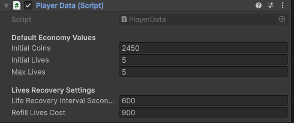
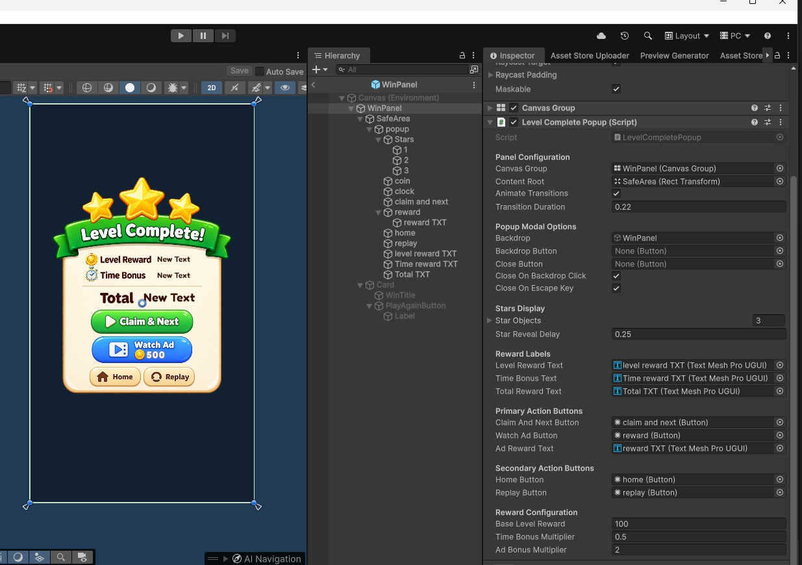
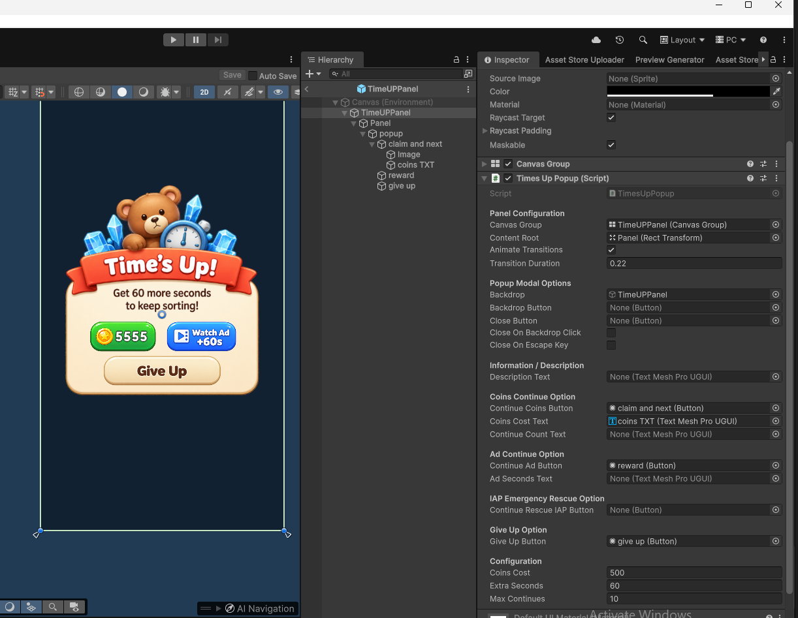
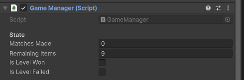

11. Coins, Lives & Rewards
Tune starting currencies, life recovery intervals, out-of-lives popups, win stars, time bonuses, and continue options.
11.1 Coins and lives
Select the game manager and expand Player Data.

| Setting | What it does |
|---|---|
| Initial Coins | Coins given when no saved coin value exists. |
| Initial Lives | Starting lives for a new profile. |
| Max Lives | Normal maximum lives. Keep starting lives at or below this. |
| Life Recovery Interval Seconds | Time to recover one life. 600 means 10 minutes. Use a positive value. |
| Refill Lives Cost | Coins needed for a full refill. |
Lives recover using saved time, including time away from the game. Infinite lives lets the player attempt levels without consuming a life for the configured duration.
Life use in the current flow: Starting a level does not immediately remove a life. Leaving or restarting an unfinished attempt uses one. Giving up after failure uses one. Completing a level keeps the life. A continue resumes the same attempt.
11.2 Out of Lives popup
Open Assets/Prefabs/UI Panels/OutOfLivesPopup.prefab.

| Area | What you can change |
|---|---|
| Header Texts | Assign the title and subtitle text objects. Check both edit-time text and the running popup. |
| Lives Display | Heart objects, full/empty sprites, the lives ratio, and countdown text. |
| Refill Option | Coin refill button and cost label. The actual coin cost comes from Player Data. |
| Ad Refill Option | Rewarded button and Lives Awarded Per Ad. |
| IAP Lives Options | References to the existing refill and infinite-lives purchase buttons. |
| Navigation | Home button. |
If you change Max Lives, check the number of connected heart objects too. A larger number in Player Data does not add new UI objects by itself.
11.3 Level completion rewards
Open Assets/Prefabs/UI Panels/WinPanel.prefab.

- Base Level Reward: The popup's fallback reward.
- Time Bonus Multiplier: Controls the reward calculated from remaining time.
- Ad Bonus Multiplier: Controls the multiplied claim option.
- Star Objects / Star Reveal Delay: Control the star display and reveal timing.
- Reward Labels and Buttons: References for displaying and claiming the reward.
The time bonus is remaining seconds x Time Bonus Multiplier, rounded to a whole number. For example, 40 seconds left with a multiplier of 0.5 adds 20 coins. Stars use the remaining time ratio: at least 50% gives three stars, at least 25% gives two, and less gives one. An unlimited-time level gives three stars. These star thresholds are part of the existing behavior, not Inspector sliders.
11.4 Time's Up and continue
Open Assets/Prefabs/UI Panels/TimeUPPanel.prefab.

| Field | What it does |
|---|---|
| Coins Cost | Coins needed for the coin continue option. |
| Extra Seconds | Time added when continuing. |
| Max Continues | Limit checked by the continue flow. |
| Coin / Ad / Rescue buttons | Connect the existing continue choices. |
| Description and labels | Connect the text objects updated by the popup. |
| Give Up Button | Ends the attempt through the existing failure flow. |
11.5 Progress and testing settings
Use the Level Manager screenshot in Section 6.
- Level Database: Main ordered content list.
- Inline Level Prefabs: Fallback list when the database has no levels.
- Level Container: Optional parent for spawned level content.
- Save Progression: Enables saving unlocked progress.
- Save Key: Name used for stored progression. Changing it switches to a different stored progression value; it
does not rename or clear all player data.
- Enable Test Level / Test Level Number: Starts testing from a chosen level.
- Enable Skip Level Button / Skip Level Button: Connects a testing shortcut.
- Legacy Fallback: Older scene-based setup. Keep it as supplied for the normal prefab/database workflow.
The Game Manager fields below are mostly live status information. They are not the place to set a level's item count or configure its starting difficulty.

11.6 Quickly test lives options
In Play Mode, open Player Data's component menu. The included helpers are Debug: Set Lives To 5 (Full), Debug: Set Lives To 0, and Debug: Fast-Forward 10 Minutes. Use these to check the hearts, recovery, and Out of Lives flow. The full-lives helper uses your configured Max Lives, and the fast-forward helper advances one configured recovery interval, even though their menu labels use the original defaults.
These helpers change saved test values. Keep them for your test profile.